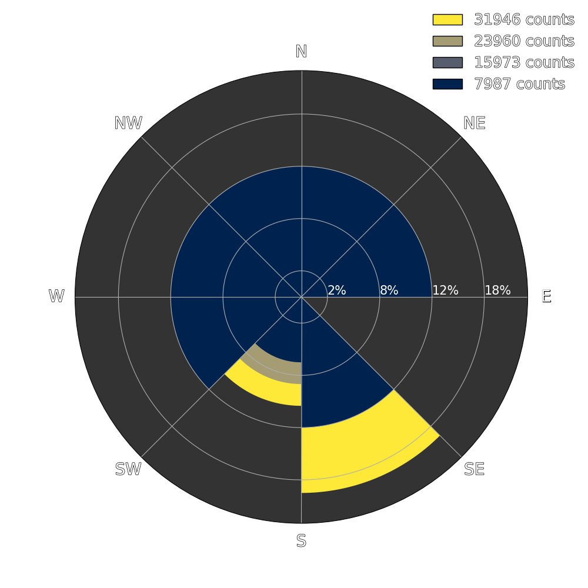
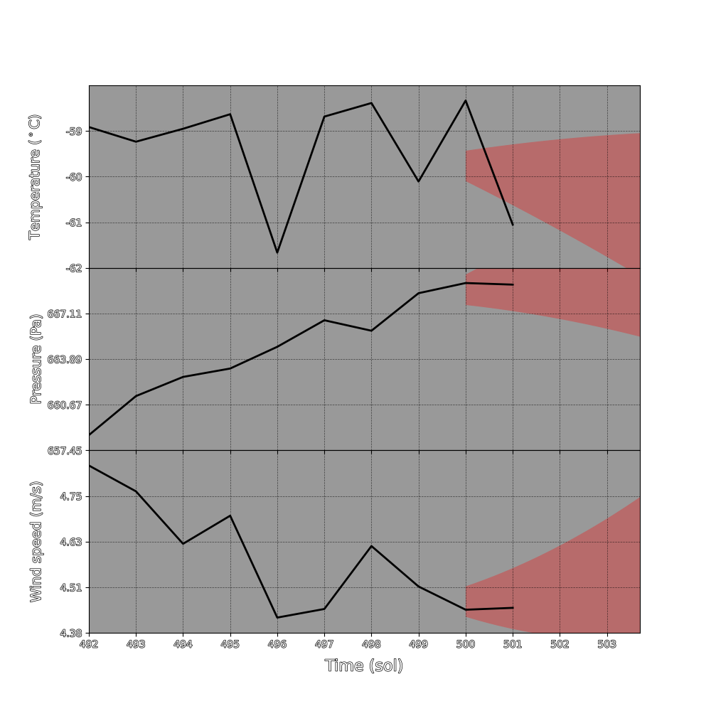

Data for the Mars Weather website was gathered from NASA’s “InSight: Mars Weather Service API.”
The Insight rover takes continuous weather measurements of the Martian atmosphere in Elysium Planitia,
a large plain near Mars’s equator.
Data Last Updated:
Current Season On Mars:
Current Sol:
Wind Rose Plots

This is a wind rose, which contains information about the direction, frequency,
and strength of wind over the last three Sols. The area in each radial histogram bin indicates
the frequency of wind pointing in that direction, and the counts (indicated by the color) are a proxy
for the strength of the wind when it was blowing that direction.
Temperature/Pressure/Wind Plots

This is the average temperature, pressure, and wind speed over the past few weeks. The
red line is our forecast. Samples are taken once per day.
About the Team
Garrett Faucher, a junior Computer Science major and Astronomy minor. He likes to look at stars and bike.
Eliot Heinrich, a senior physics and computer science major. He is a ballroom and swing dancer.
Thomas Sheboy, a junior Computer Science major and Mathematics minor. He likes to play guitar.
Stanhope Nwosu, a senior Computer Science major and Statistic minor. They like to play the trumpet and enjoys beaches.
In this project, we wanted to inform clients and others of Mars' weather.
We decided on this project because we wanted to explore more information on Mars and
inform others in a simplified local form. We began by extracting and organizing data on
Mars' weather measurements and compiling them into graphs that could be easily
understood and interpreted. The data we are making use of is from NASA's MARS InSight Mission.
We are also utilizing this data to forecast future Mars' weather, by a day or so.